To demonstrate the usage of the DeepFloyd IF diffusion model, below are a few examples of different prompts using 20 inference steps with stage 1 of the model, which generates images at 64x64 resolution. Using a seed value of 180:
Images generated with num_inference_steps=20
Prompt 1 – 'a photo of a hipster barista' Prompt 2 – 'a man wearing a hat' Prompt 3 – 'a rocket ship'
Using stage 2, we can take the output of stage 1 and upscale it to 256x256 resolution:
Prompt 1 – 'a photo of a hipster barista' Prompt 2 – 'a man wearing a hat' Prompt 3 – 'a rocket ship'
By increasing the inference steps, we can generate higher quality images at the cost of more compute time. Below are the stage 2 outputs with the number of inference steps at 100:
Images generated with num_inference_steps=100
Prompt 1 – 'a photo of a hipster barista' Prompt 2 – 'a man wearing a hat' Prompt 3 – 'a rocket ship'
From the above, we can see that with longer prompts, we can generate images with more specific details.
Part 1.1 – The forward process
To start, we have the original Campanile image at 64px:
To add noise to an image x0, we can use the forward process and compute
for a given timestamp t ∈ [0, 1, ..., 999, 1000]. The noise coefficient at timestamp t can be obtained using
for a given t. Below are examples of the Campanile at noise timestamps 250, 500, and 750:
Campanile at Different Noise Levels
Campanile at t = 250Campanile at t = 500Campanile at t = 750
Part 1.2 – Classical Denoising
In order to try to revert the image with noise, we can attempt the classical method for denoising. Namely, Gaussian filtering. However, with high noise, the effect is limited:
Noisy vs Gaussian-Denoised Campanile
Noisy Campanile (t = 250)5×5 Gaussian denoised
Noisy Campanile (t = 500)5×5 Gaussian denoised
Noisy Campanile (t = 750)5×5 Gaussian denoised
Part 1.3 – Implementing One Step Denoising
A more effective method is to use a pretrained diffusion model. Using stage_1.unet, we can estimate the amount of noise in the noisy image. With the forward process defined above, we can solve for x0 (the original image) given xt (the noisy image) at timestamp t:
This method of estimating the clean image given a noisy image is known as one-step denoising. Below is a comparison of the original, noisy, and the estimate of the original image for t ∈ [250, 500, 750]:
Original CampanileNoisy Campanile (t = 250)One-step estimate of original (t = 250)
t = 500
Original CampanileNoisy Campanile (t = 500)One-step estimate of original (t = 500)
t = 750
Original CampanileNoisy Campanile (t = 750)One-step estimate of original (t = 750)
Part 1.4 – Iterative Denoising
Instead of using one-step, we can obtain better results by iteratively denoising from step t until step 0. However, this means running the diffusion model 1000 times in the worst case, which is slow and costly. Fortunately, we can speed up the computation by first defining a series of strided timestamps, starting at close to 1000 and ending at 0. For the examples below, we will use strided_timestamps = [990, 960, ..., 30, 0]. Then, we can use the formula
to compute x at timestamp T, where T (or prev_t) is the next timestamp after the current timestamp in the strided timestamps. First, we use the definition of the constants, where alpha_cumprod_t is the variable with the bar:
Then, we can get an approximation of x0 by using the one-step estimate. The estimated variance will be computed along with the noise estimate, allowing us to calculate xT using the formula above and obtain the image estimate for the next step. Below are some visualizations for the iterative denoising process:
Denoising Loop Visualizations (i_start = 10)
Noisy Campanile at t = strided_timestamps[i_start] (t = 690):
As we can see, the iterative denoising process produced a more detailed image.
Part 1.5 – Diffusion Model Sampling
Starting with pure noise, we can obtain random denoise images by setting the starting index of strided_timestamps to 0, and using the prompt 'a high quality photo'. Below are a few examples:
Sample 1Sample 2Sample 3Sample 4Sample 5
Part 1.6 – Classifier-Free Guidance (CFG)
To improve the quality of the images, we can compute both a noise estimate conditioned on the text prompt and the unconditional noise estimate based on the null prompt ''. Denoting the conditional noise estimate as εc and the unconditional noise estimate as εu, we let our noise estimate be ε = εu + γ(εc - εu). Note that we have ε = εu and ε = εc for γ = 0 and γ = 1 respectively. However, when γ > 1, we can get much higher equality images for reasons still discussed today. This technique is known as classifier-free guidance. By using γ = 7 and the conditional & unconditional prompts be 'a high quality photo' & the null prompt '', we get the following sample images:
These settings (γ = 7 and the unconditional prompt being '') will be used in all future usage of the CFG iterative denoise function.
Part 1.7 – Image-to-image Translation
Similar to how we added noise to an existing image before denoising the result in part 1.4, we can use the iterative_denoise_cfg function to get a result that is of higher quality, as opposed to merely a prediction of the original. By adjusting the starting amount of noise to the Campanile with the timestamp index i_start, where a higher index means less noise, we get a series of edits that gradually go from entirely new to resembling the original image:
Edits of the Campanile (Noise Levels [1, 3, 5, 7, 10, 20])
Using the techniques above, we can also modify our iterative_denoise_cfg function to edit certain sections of an image. To do so, we first define a mask the same size as the image that is 1 at the pixels where we want to edit, and 0 otherwise. For each loop of the denoising process, we replace xt with mxt + (1 - m)forward(x0, t), where m is the mask and x0 is the original image.
Once image is replaced by masked_image, we replace all further occurrences of image except for the last instance, as the image at each step still needs to be updated. Finally, we let our starting noise be purely random and start with a timestamp index of 0, so that the patch we want to change can be sufficiently denoised. Below are the results on the Campanile image:
Campanile Inpainting
OriginalMaskInpainted
Below are 2 other examples of inpainting similar images:
Finally, we can also change our conditional prompt, namely 'a high quality photo', to any other. This will give control over what the noise is projected to, resulting in a series of images that look more like the original image, but also similar to the conditional prompt.
We now have the necessary tools to generate visual anagrams, or images that look like another different one when flipped/rotated. As an example for a vertical flip anagram, we would start with 2 prompt embeddings p1 and p2. For p1, we would compute the noise estimate ε1 normally at each step, but for p2, we flip the image xt first before computing the noise estimate, then flip back the estimate to obtain ε2, which would be the noise estimate of the flipped image.
Once this is done, we will use the average of ε1 and ε2 as the final noise estimate for each step. The variance can also be computed similarly, namely v1 will be computed in the usual way, while v2 will be the flipped variance estimate of the flipped xt, and the final variance estimate will (v1 + v2) / 2. Below are a few examples of such an effect, with p1 being the first prompt and p2 being the second:
Prompts: 'an oil painting of an old man' & 'an oil painting of people around a campfire'
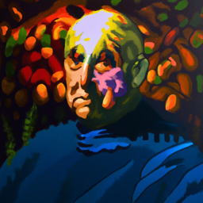
Original
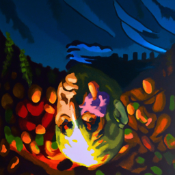
Flipped
Prompts: 'a lithograph of waterfalls' & 'a man wearing a hat'
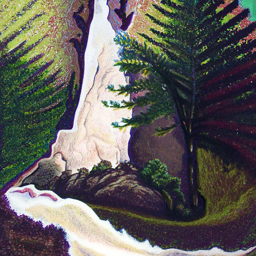
OriginalFlipped
Prompts: 'an oil painting of a snowy mountain village' & 'a photo of a dog'
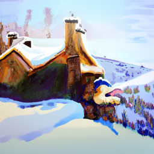
Original
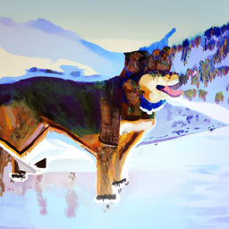
Flipped
Part 1.9 – Hybrid Images
With the techniques above, we can now also create hybrid images, or images that look like different subjects depending on the viewing distance. The classical way to create a hybrid image is to transform the image you want to see at a far range with a low-pass filter, the image you want to see at close range with a high-pass filter, and combine the 2 transformed images. We can use a similar algorithm in the denoising process, namely by passing the noise estimate from p1 and p2 through a low and high pass filter, respectively.
After doing so, we will add the 2 filtered noises together to get the final noise estimate at each step. This will produce an image that, when viewed close up, shows p1, but when viewed far away, shows p2. Unlike the anagram images, we don't need to flip or transform the image to be denoised, as both images should be viewed under the same orientation. Below are several examples:
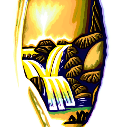
Prompts: 'a lithograph of a skull' (low-pass) & 'a lithograph of waterfalls' (high-pass)
Prompts: 'a pencil' (low-pass) & 'a rocket ship' (high-pass)
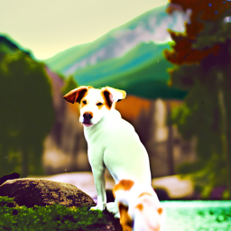
Prompts: 'a lithograph of waterfalls' (low-pass) & 'a photo of a dog' (high-pass)
Part 2 – Implementing the UNet from scratch
Now that we know how we can generate images with the help of a UNet in a denoising model, we will go through implementing one from scratch. More specifically, we will be attempting to generate digits similar to those in the MNIST dataset from pure noise using a denoising UNet that we will create.
Training an Unconditioned UNet
The most basic denoiser is a one-step denoiser. Formally, given a noisy image z, we aim to train a denoiser Dθ(z) that can map it to a clean image x. To do this, we can optimize over the L2 loss Ez,x||Dθ(z)||2 while training.
To create a noisy image, we can use the process z = x + σε where σ ∈ [0, 1] and ε ~ 𝒩(0, 𝐈). Here, 𝒩 is the standard normal distribution. To visualize the kind of images this process will result in, below is an example of an MNIST digit with progressively more noise as σ gradually increases from 0 to 1:
For the hyperparameters, we will be using a batch size of 256, a learning rate of 1e-4, a hidden dimension of 128, the Adam optimizer with the given learning rate, and a training time of 5 epochs. A fixed noise level of σ = 0.5 will be used to noise the training images.
Evaluation results
After the model is trained, below is the training loss curve, where the loss of the model is plotted for every batch processed:
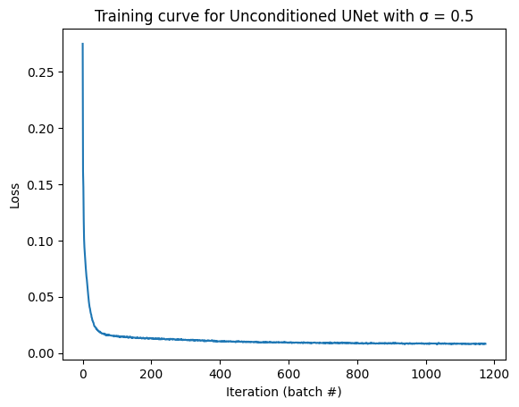
The following are the performance of the model after the 1st and 5th epoch on sample test images, all noised with σ = 0.5:
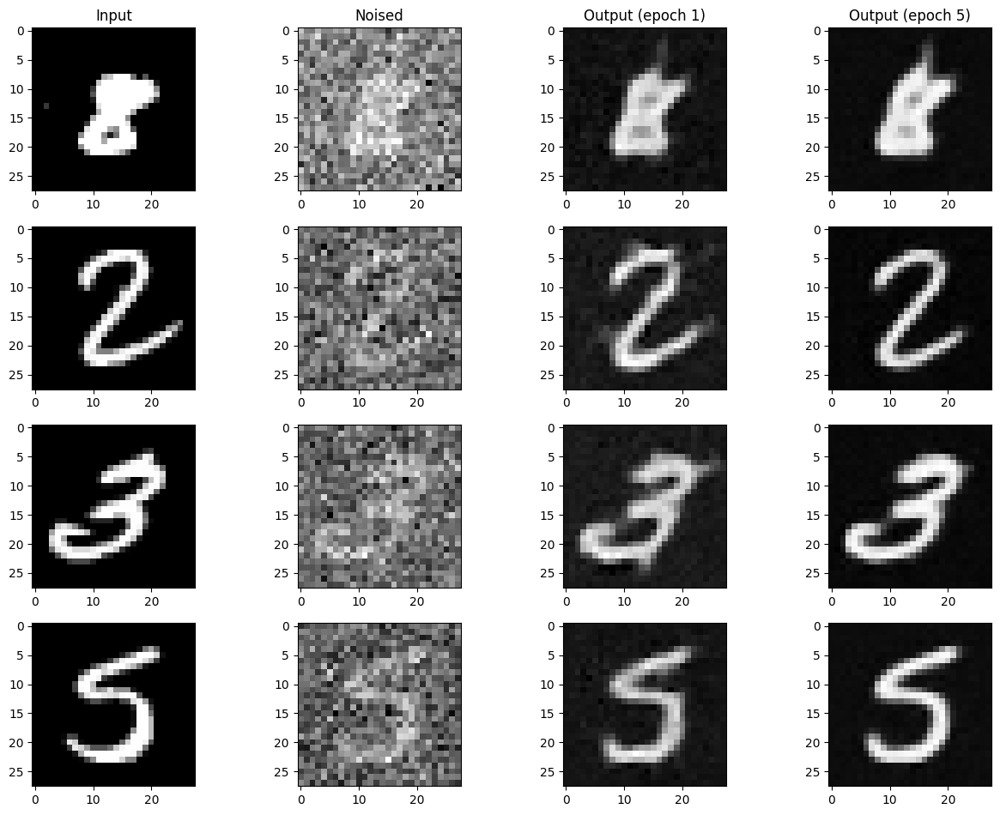
We can see that the model performs decently on different digits. To illustrate its effectiveness on images noised with different levels of σ below is the model after the 5th epoch denoising the same image with different levels of noise for σ ∈ [0.0, 0.2, 0.4, 0.5, 0.6, 0.8, 1.0]:
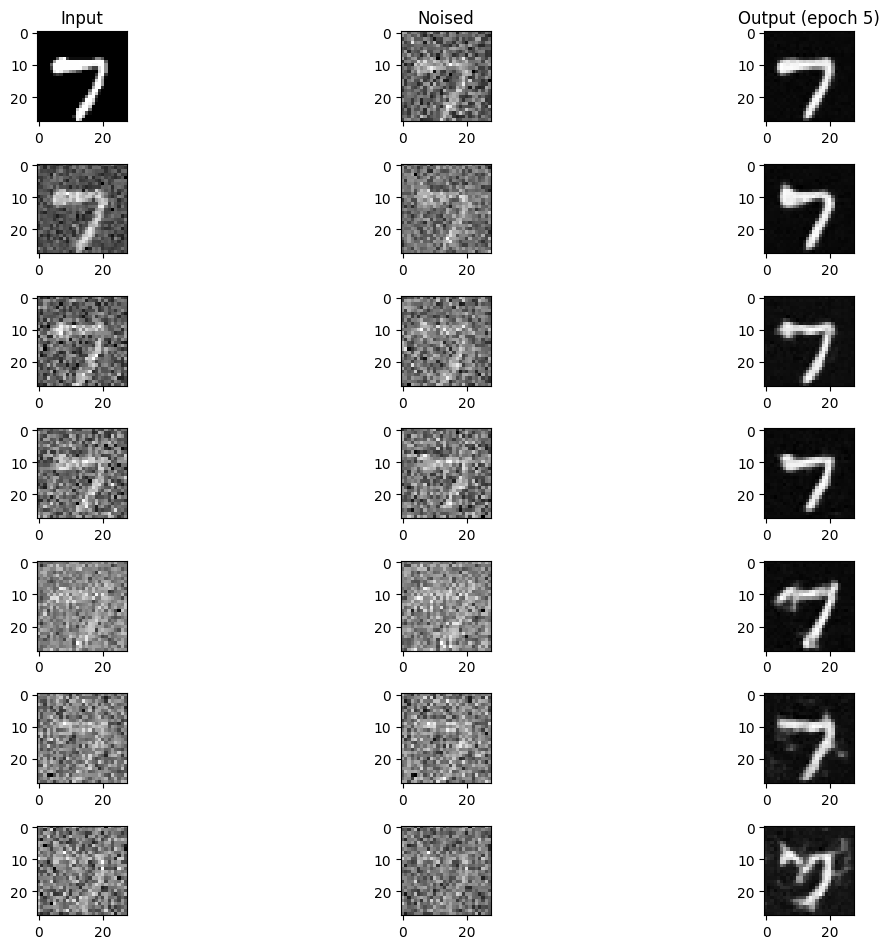
Although the model works well for images with small amounts of noise, the more noise the image has, the less quality of the model's prediction.
Limitations on pure noise
Although the model is decent at removing noise from images, our goal is to generate digits from pure noise. This proves to be an issue because with MSE loss, the model will learn to predict the image that minimizes the sum of its squared distance to all other training images. To illustrate this issue, we will feed the model a pure noise sample z ~ 𝒩(0, 𝐈) on all training inputs x, and because z contains no information about x, the result is an average of all digits in the training set.
As a result, while the training loss curve shows not much suspect:
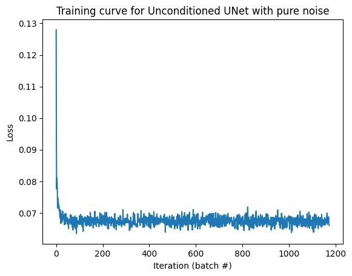
The following inputs and the output of the model after the 1st and 5th epoch display the average-like output of the model:
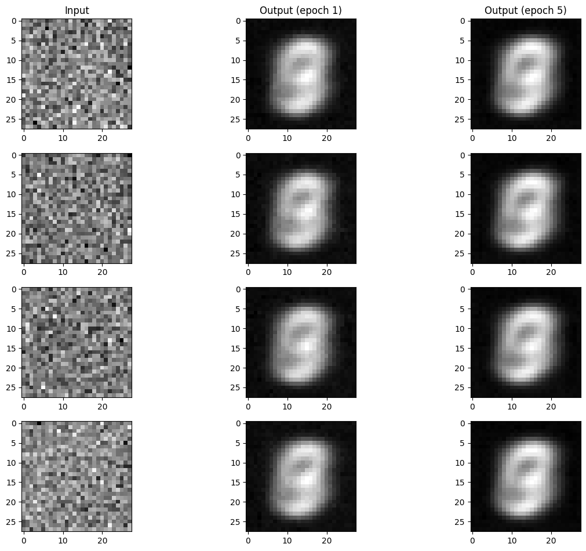
To generate plausible-looking digits, we need a different approach than one-step denoising.
The Flow Matching Model
Instead of trying to denoise the image in a single step, we aim to iteratively denoise the image, similar to how we do so in the sampling loops using DeepFloyd's noise coefficients. To do this, we will start by interpolating how intermediate noise samples are constructed. The simplest approrach is to use linear interpolation, namely let the intermediate sample be xt = (1 - t)x0 + tx1 for a given t ∈ [0, 1], where x0 is the noise and x1 is the clean image.
Now that we have an equation relating a clean image with any pure noise sample, we can train our model to learn the flow, or the change with respect to t for any given xt. This produces a vector field across all images, where the velocity for each is d/dt xt = x1 - x0. Therefore, if we can predict x1 - x0 for any given t and xt, we can go along the path traced out by the vector field and arrived at somewhere near the manifold of clean images. This technique is known as a flow matching model, and with the model trained, we can numerically integrate a random noise sample x0 with a set number of iterations using Euler's method, and get a clean image x1.
Training a Time-Conditioned UNet
To add time conditioning to our UNet, we will make the following changes to our model architecture:
For the hyperparameters, we will be using a batch size of 64, a learning rate of 1e-2, a hidden dimension of 64, the Adam optimizer with the given learning rate, a exponential learning rate decay scheduler with γ = 0.1(1.0 / num_epochs), a sampling iteration count of T = 50, and a training time of 10 epochs. To advance the scheduler, we will call scheduler.step() at the end of each training epoch.
Forward and Sampling Operations
To train our model, for each clean image x1 we will generate x0 ∈ 𝒩(0, 𝐈) and t ∈ U([0, 1]), where U is the uniform distribution. After computing xt = (1 - t)x0 + tx1, we will feed xt and t into our UNet and compute the loss of uθ(xt, t) and x1 - x0. Below is the new model's training loss curve:
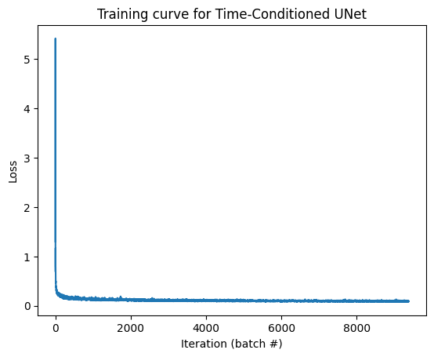
When sampling from the model, we will simply generate a random x0 ∈ 𝒩(0, 𝐈), and for every iteration i from 1 to T, we will compute x0 = x0 + (1 / T)uθ(xt, t), where t = i / T. The following are the results ofthe 1st, 5th, and 10th epoch:
Although the results are not perfect, the improvements starting from the 1st epoch up to the 10th are already noticeable.